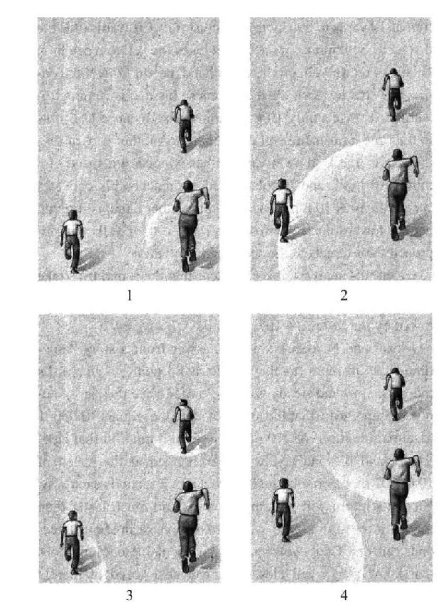
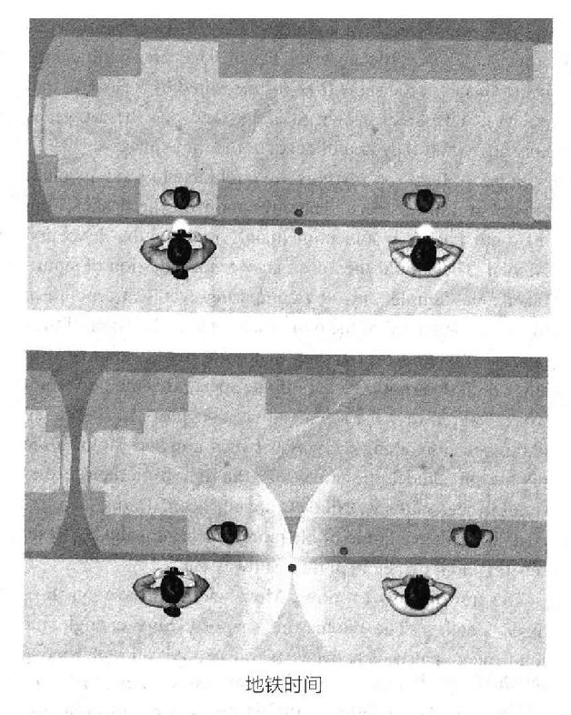
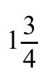

高斯和黎曼展示了空间是可以弯曲的，并给出了描述它的数学形式。下一个问题是，我们生活在什么样的空间里？还有更深层次的探索：是什么决定了空间的形状？
这个答案，在1915年被爱因斯坦优美而精确地给出，实际上是在1854年首次提出的。黎曼自己用宽泛的语言写道：
是什么让问题相隔这么远又这么近？黎曼太超前了，以至于他无法将自己的见解发展出具体的理论，人们甚至连他的话都无法理解。尽管16年后，一位数学家确实注意到了这一点。
1870年2月21日，威廉·金顿·克利福德（William Kindon Clifford）向剑桥哲学学会提交了一篇题为《关于物质的空间理论》的论文。克利福德当时25岁，与爱因斯坦同龄，发表了他的第一篇关于狭义相对论的文章。在他的论文中，克利福德大胆地宣布2：
克利福德的结论在特殊性上远远胜过黎曼。但他的理论并不引人注目，除了一件事：他是对的。物理学家们今天阅读这篇文章的反应是：“他是怎么知道的？”爱因斯坦在经过多年的仔细推理后得出了类似的结论。克利福德甚至没有形成一个理论。然而，克利福德成功运用直觉得出了一些细节性的结论。他、黎曼和爱因斯坦都遵循了同样简单的数学思想：如果自由运动的物体在欧几里得空间的轨迹是直线，那么其他类型的运动是否有可能用非欧空间里的曲率来描述？最后，正是爱因斯坦的缜密推理，基于物理学而非数学，使他得以发展克利福德未能完成的理论。
克利福德狂热地研究理论，通常整夜工作，因为白天他在伦敦大学学院有繁重的教学和行政工作负担。但如果没有爱因斯坦对物理学的深刻理解，爱因斯坦就无法进入发展狭义相对论的中间阶段；如果没有时间概念参与其中，那么克利福德就几乎没有机会把他的想法发展成一套可行的理论。数学已经超前于物理学——这是一种困难的境地，让人想起我们即将看到的弦论在今天的发展状态。克利福德的研究收效甚微。他于1876年去世，享年33岁，有人说他是因为过度劳累。3
有一个问题是，克利福德发现自己正领导着一场游行。在物理学的世界里，天空晴朗而明亮，几乎没有人认为有理由花时间去攻击那些没有坍塌迹象的定律。200多年来，似乎宇宙中的每一事件都可用牛顿力学来解释，该理论基于艾萨克·牛顿的思想。在牛顿看来，空间是“绝对的”，是一个固定的、上帝赋予的框架，用于放置笛卡儿坐标。物体运动的路径是由一组数描述的一条直线或其他曲线，这些数是标记空间路径的坐标。时间的作用是“参数化”（paramatrize）路径，这是数学家的行话，意指“告诉你正沿着哪里走”。例如，如果阿列克谢走在第五大道，从第42街开始，以每分钟一个街区的速度，那么他的位置就是第五大道和第（42加分钟数）大道。只要确定他走了多少分钟，你就可以确定他在沿着哪条路径走。
有了这种对时间和空间的理解，牛顿定律预测了像阿列克谢这样的物体是怎样运动的，以及它为什么运动——定律将他的位置作为时间参数的函数。（当然，这假定他是一个没有生命的物体，只有在某些时候是正确的；我们可以给他带上随身听耳机。）根据牛顿理论，阿列克谢将继续保持一致的动作——在一条直线上，以恒定速度——除非受到外力的作用，比如受到拐角处一家电子游戏厅的吸引。或者，考虑到这种吸引力，牛顿定律预测了阿列克谢的路径将与匀速运动有怎样的不同。你可以从数量上准确地描述他将如何移动，只要给定他的惯性质量和外力的强度和方向。根据这些方程，物体的加速度（即速度或方向的变化）与施加于它的力成正比，与它的质量成反比。但是物体对力的反应的描述仅仅是图像的一半，被称为“运动学”（kinetics）。为了形成一个完整的理论，我们还需要知道“动力学”（dynamics），即给定源（游戏厅），目标（阿列克谢），以及它们的距离，如何确定力的强度和方向。牛顿给出了一个与受力有关的方程，仅仅与一种类型的力相关——引力。
把两组方程——受力方程（动力学）和运动方程（运动学）放在一起，（原则上）可以解出一个物体的路径，它是时间的函数。人们可以预测，比如阿列克谢绕着游戏厅运动的轨道，或者在两大洲之间的弹道导弹的轨道。牛顿实现了始于毕达哥拉斯时期的雄心壮志，即构建可以描述运动的数学体系。为了解释同样的定律如何在地球和太空中支配物体运动，牛顿做了同样重要的事情：他统一了两个古老但分离的学科——物理学，主要注重日常人类经验；天文学，它一直关注天体的运动。
如果牛顿关于空间和时间的观点是正确的，那么很容易推出两件不可能的事情。首先，一个物体在接近另一个物体时的速度是没有限制的。为了理解这一点，想象存在这样一个极限速度；接着，想象一个物体以该速度接近你。现在我们（为了科学实验）向该物体吐唾沫。如果这出戏发生在一个叫做绝对空间的有形介质中，那么很容易看到，该物体现在正以比它快的速度接近你的唾液。这样就违反了速度限制律。第二，光速不是恒定的。更确切地说，光必然以不同的速度接近不同的观察者。如果你跑向光，它将以更快的速度接近你。
如果空间的客观结构是存在的，那么这两个真理是不言而喻的，但这两个“真理”是错误的。这是狭义相对论的基础，是早期关于弯曲空间物理性质的推论中缺失的成分。人们长期“观察”（observed）到这个事实，但很久后才“领会”（appreciated）到它。
年轻的黎曼对波兰历史产生了浓厚的兴趣，几年之后，在波兰的种族主义省份波斯南（Posnan）——该省后来被普鲁士人所统治——一对年轻夫妇生下了一个名叫阿尔伯特（Albert）的男婴。有人认为，波兰民族主义的英勇斗争就好比书中的故事，比真实生活体验更吸引人。如果说波兰人是英雄，那么他们同时也是反英雄人物，表现出一种充满恶意的反犹太主义，这使波兰成为希特勒安置毒气室的首选国家。不知什么原因，大约1855年，高斯去世，阿尔伯特的家人，迈克尔孙家族，移民到纽约，不久之后来到旧金山。这位第一个获得诺贝尔奖的“美国”科学家，一个波兰——普鲁士犹太人，来到了这个国家。当时在这个奖出现的半个世纪之前，他还是3个蹒跚学步的孩子之一。
1856年，迈克尔孙一家4搬到了位于加州卡尔弗拉斯县的一个偏远的矿业小镇墨菲（Murphy’s），大约在旧金山和塔霍湖之间。他父亲开了一家干货商店，但家人没有留在这儿。远离他们的德国犹太家族，迈克尔孙一家最终定居在内华达州一个新兴的小镇上。这个新的“城市”不过是1859年建立在戴维森（Mount Davidson）山坡上的一个露营地。据传说，一名喝醉了的矿工在一块石头上砸了一瓶威士忌来给他的住处受洗。仿佛天生注定，这座城很快成为古老西部[4]最大的城市之一：弗吉尼亚城。矿工詹姆斯·“老处女”·芬尼（James Old Virginny Finney）以自己的名字命名了这个小镇。戴维森山的金银很快让芬尼的小镇成为西部工业最发达的城市之一，规模堪比旧金山，同样繁荣的有枪支业，赌博，当然还有酒吧。
阿尔伯特的一个妹妹后来写了一本讲述当时生活的小说，叫《麦迪根家族》（The Madigans）。他的弟弟查尔斯，也是富兰克林·罗斯福总统新政内容的代笔人，在他的自传《鬼谈》（The Ghost Talks）中也写到了这些。但小阿尔伯特搬家后，很少有时间和家人在一起。
相反，他表现出优越的智商，所以留在旧金山的亲戚们那里，进入了林肯语法学校，后来，又进入男子高中，寄宿在校长家里。
1869年，年轻的迈克尔孙参加了在马里兰州安纳波利斯市举办的美国海军学院入伍竞争。他没能达到标准。事实证明，这场竞争是对毅力和知识的考验：16岁的年轻人提前几个月穿梭于横贯大陆的铁路上，前往华盛顿拜见美国总统格兰特。与此同时，在内华达州的国会议员代表阿尔伯特写信给总统。信的内容是，弗吉尼亚州犹太人将年轻的阿尔伯特视如珍宝，如果格兰特能帮助他，将有助于巩固犹太人的选票数目。迈克尔孙最终见到了格兰特总统。5我们没有会议进程的记录。在流行文化中，格兰特与维吉尼亚城一样臭名昭著：威士忌扮演着重要角色。
这个描述并不准确。除了在他的生命中一段短暂的时间之外，一个未被经常提及的事实是，在西点军校，格兰特在数学方面表现出色。6无论是为了支持年轻的数学家，还是作为总统希望得到犹太选区的支持，格兰特的表现非同寻常：他给了迈克尔孙一个特殊的任务，要求学院在那一年增加对原本严格的新学员名额数目。从长远来看，迈克尔孙-莫雷实验也许是格兰特最重要的遗产。
迈克尔孙成为学校拳击比赛的冠军，而他那粗犷狂野的西部背景塑造了他在学院的性格特征。在学术上，迈克尔孙在29人的班级中名列第九。但他的整体排名并没有显示出他职业生涯的真正动力所在：他在光学和声学方面排名第一；在航海方面排名二十五；在历史方面，排名最后。迈克尔孙的才能和兴趣非常明显清晰。海军学院对迈克尔孙集中培养的方向也很清晰。其负责人约翰·L.沃顿[1862年曾指挥“监视号”（the Monitor）打击“梅里马克号”（the Merrimac）装甲舰]对迈克尔孙说，“如果你把对科学的注意力更多地放在海上射击，将来有一天，你所知道的东西才会足够为国家所用。”7尽管他显然更注重射击而不是科学，但当时安纳波利斯（美国马里兰州首府）的物理课程依然是全国最好的。
迈克尔孙使用的是由法国作者阿道夫·加诺（Adolphe Ganot）翻译的1860年版的译本。其中，加诺描述了一种被认为弥漫于整个宇宙的物质：“……有一种微妙的、不可估量的、十分有弹性的液体被称为以太，分布于整个宇宙；它遍及所有物体有质量的部分，包括最密集和最不透明的地方，以及最轻和最透明之处。”8
加诺将那个时期光、热和电的实验研究的大部分现象，都归因于以太的基本作用：“一种特定类型的运动传递到以太上，可以引起发热现象；相同的运动，但更大的频率将产生光；而另一种形式和性质上不同的运动，导致了电的产生。”
以太的现代概念是由基督徒惠更斯在1678年发明的。9这一术语是亚里士多德给第五元素取的名字，是天堂的组成部分。10根据惠更斯的观点，上帝创造了空间，就像一个巨大的水族馆，我们的星球就像一个漂浮的玩具，你可以跳进去用玩具来逗鱼。只有以太，不像水，不仅在我们周围流动，而且也能穿过我们。这个概念对任何像亚里士多德这样对空间中的“虚无”或真空感到不自在的人都很有吸引力。惠更斯改写了亚里士多德的以太理论，试图解释丹麦天文学家奥拉夫·罗默（Olaf Romer）的发现。他发现，从木星的一个卫星上发出的光需要一段时间才能到达地球，而不是瞬间到达地球。这一事实，以及光的传播速度似乎独立于其来源，证明了光是由贯穿空间的波组成，就像声音在空气中传播一样。但是声波，就像水波，或跳绳上的波浪一样，人们认为这实际上只是介质的有序运动，如空气，水，或绳子的运动。如果空间中没有介质，就无法让一条波从中穿过。正如庞加莱在1900年所写，“人们都知道我们对以太的信念源于何处。当光从遥远的恒星向我们传来时，它不再停留在恒星上，也还未到达地球。那么它一定存在于某个地方，通过某种物质支持而存在下去。”11
像大多数新理论一样，惠更斯的以太有好的一面，也有坏而丑陋的一面。在惠更斯的理论中，坏和丑的方面是，他作了一个十分微小的假设：整个宇宙及其内部空间都弥漫着这种极其稀薄而且至今未被观察到的气体。惠更斯在这一假设的前提下进行了大量的检查，因为在宇宙·中有一种无所不在的流体是一件事，而另一件很重要的事是使其与已知的物理定律相协调。惠更斯的理论在他的有生之年中并没有为人们所接受，因为人们更支持牛顿关于光是粒子的观点。
1801年，一项实验改变了当时盛行的观点，也提供了19世纪研究光的最为重要的新工具。这一实验看起来毫不起眼，不过是几个世纪以来所做的实验的一个变种，让光通过一个狭缝。但英国物理学家托马斯·扬（Thomas Young）将单一光源用两道狭缝分出两束光，照射到屏幕上，观察它们在屏幕上的叠加部分。他发现了明暗交替的模式：一种干涉图样。干涉在波上有一个简单的解释。重叠的波可以在一些区域叠加，在另一些区域相互抵消，比如在碰撞的水波纹中看到的波峰和波谷。随着光的波动理论的发展，以太理论得以复兴。
这并不是说对惠更斯理论的异议在几个世纪后就消失了。相反，它变成了一场恶斗。想象远处的角落有一束光，像波一样传播，但不通过介质。就像没有水的水波一样，这一竞争理论很难让人信服。再想象远处的角落里，光是一种介质，遍布四周却无处可测。像水的理论一样，坚持遍布四周却无处可测，这种理论也是不受欢迎的。光是波（但没有什么影响），抑或不是波？这是一个问题。对门外汉来说，这种区分过于斤斤计较。但对当时的科学家来说，只有一种解释占了上风：以太。而物理学家们不知道以太是由什么组成的，这一点“无足轻重”，E.S.费舍尔（E.S.Fischer）在他的著作《自然哲学的基本原理》（1827年）中如是写道。12
法国物理学家奥古斯丁·让·菲涅耳（Augustin-Jean Fresnel）表示，他不认为以太的性质是无关紧要的。1821年，他发表了一篇关于光的数学论文。波可以以两种完全不同的方式振荡——沿着它们的运动方向，像声波，或者沿着某一条线，或者沿着传播的垂直方向振动，就像绳子上的波一样。菲涅耳发现光波最可能是后者。13但这种波要求介质具有一定的弹性质量——大致说就是一定量的形体。因为这一点，菲涅耳宣称，以太不是贯穿整个宇宙的气体，而是贯穿整个宇宙的固体。这种糟糕而丑陋的理论现在几乎是不可想象的。然而，在那个世纪后续的时间里，它仍然是公认的观点。
尝试理解空间是由什么组成的，导致了有史以来最伟大的科学突破。这是一场激烈的斗争，大部分科学家都不知道他们要去往何方，也不知道他们究竟到了哪里。就像空间本身一样，他们的探索之路充满了曲折。
这一阶段始于1865年，当时一名1.65米高的苏格兰物理学家发表了一篇论文，名为“电磁场的动力学理论”。他在1873年出版了一本书，叫《关于电和磁的论述》（A Treatise on Electricity and Magnetism）。作者的出生名是詹姆斯·克拉克（James Clerk）14，但为了从死去的叔叔那里继承遗产，他的父亲后来又在名字上加上了麦克斯韦（Maxwell）。结果，他带着一点钱和这个不寻常的条款，让他叔叔的名字在物理学家和科学史学家中永垂不朽了。
麦克斯韦的电磁学理论与力学、相对论和量子理论一道，是现代物理学的基石之一。你不会在咖啡杯上发现他那一本正经、满脸胡须的脸。无论是纽约还是好莱坞文化猎头们都认为他没有吸引力。然而他的一生却在高中和大学里为人称颂：努力了解电、磁和光的多变而复杂的现象，在学习矢量计算后，突然发现现象都包含在几个无辜的方程里，几乎类似于阿列克谢所说的“由数字组成的句子”。位于加州理工学院校园附近的帕萨迪纳商店曾经引用《创世纪》中上帝的故事，上面写着：“上帝说：‘要有[四个方程]。’于是就有了光。”这方程就是麦克斯韦方程。15仅用少数字母和奇怪的符号，这些方程描述了科学中所有类型的力，除了引力。
无线电、电视、雷达和通信都只是这些方程的产物。麦克斯韦理论的量子版本就是现有最准确、范围最广的量子场论；它是描述基本粒子的“标准模型”，而基本粒子是我们所知道的最小的物质粒子。仔细分析麦克斯韦的理论，就会推出狭义相对论，并且得出以太不存在。
当时这一切都不那么显而易见。
今天的物理系学生学习的是麦克斯韦理论的一组简洁的微分方程，它们能解出两个矢量函数，可以从理论上推导出真空中的所有光学和电磁现象。这是十分优美的理论进展。但教科书中研究它的意义以及如何被发现的过程，就像为了生孩子在上无痛分娩法（Lamaze）课程一样；没有强烈的痛苦和尖叫，两种经历的感觉是不一样的。很久以前，一个年轻的研究生（我）交了作业论文，用两种方法解决了一个复杂的电磁辐射问题，以便感受更强大的解决方案的神奇之处。采用现代张量技术的优雅方法，所花费的计算量会少整整1页。而“蛮力”方法需要18页的数学才能得到相同的答案。（教授教这门课，让他把所有这些都整理好了。）后一种方法更接近麦克斯韦的原始理论，但没有像它一样笨拙。麦克斯韦在1865年的理论是包含20个未知数的20个微分方程。
一方面，仅仅靠一些尚未发明出来或者尚未广泛使用的符号，人们是很难理解麦克斯韦的理论的。另一方面，麦克斯韦理论不仅本身很复杂，而且看起来也很复杂；它还被解释得很糟糕。显然，自然规律本身的精密严谨让麦克斯韦能够吸收和统一那个时期的大量知识，并在他的头脑中处理复杂的理论，但这些妨碍了他解释这些理论的能力。亨德里克·安托万·洛伦兹（Hendrick Antoon Lorentz）是负责解释和简化理论的人之一，他后来写道：“理解麦克斯韦的想法并不总是那么容易。”16在他的书中，人们感到缺乏统一性，因为它忠实地记录了他从旧思想到新思想的逐步过渡。用保罗·埃伦费斯特（Paul Ehrenfest）的不太友好的言辞说，它是“一种智力上的丛林”17。麦克斯韦留给他的同事们的是知识要点的无序堆积，而不是一个适合教学的解释。尽管麦克斯韦的理论很晦涩，但他却是世界上最伟大的电磁现象掌控大师。有了这样的洞察力，麦克斯韦对空间应该由什么构成的立场是什么？是以太，或者不是以太？他于1878年在《大英百科全书》第九版上发表了一篇文章：
甚至连伟大的麦克斯韦都无法放弃某些实体的存在性。
值得称颂的是，麦克斯韦并没有像许多人那样简单地挥舞双手告别以太研究，将其视为不可观察从而不予理会。他发现了第一个，也是最重要的可观测结果：如果光波以恒定速度行进，该速度与以太相关，且如果地球沿椭圆轨道穿过以太运行，那么朝地球传来的光速变化，取决于地球在轨道上的位置。毕竟，地球在1月和7月是沿不同方向运动的，分别位于轨道的两端。1864年4月23日，麦克斯韦试图进行一项实验，以确定地球在以太上移动的速度。
他提交了一篇题为“确定地球的运动是否会影响光的折射的实验”的文章，将发表在《皇家学会学报》上。
遗憾的是，他的文章没能发表，因为编辑G.G.斯托克斯（G.G.Stokes）说服麦克斯韦，认为他的方法不可靠。至少在原则上不可信。麦克斯韦没有活着看到以太的问题被解决，但在1879年，当他忍受胃癌的痛苦不久将离世时，他把这个问题寄给了一个朋友。他的信最终导致了以太不存在的实验证明。

运动中的信息交换
麦克斯韦的信发表在《自然》杂志上，迈克尔孙看到了这封信。这使他有了做个实验的想法。要理解迈克耳孙的实验设置，可以想象尼古拉、阿列克谢和他们的父亲在公园里打球。他们与父亲分别站在一个直角三角形的三个顶点上，沿着水平轴和垂直轴，尼古拉在北边，阿列克谢在西边，与原点都有相同距离。
想象一下，他们3个都以同样的速度向北跑。假设爸爸距离男孩10码，他们都以每小时10英里的速度奔跑。爸爸正在追赶尼古拉，尼古拉已经带球跑掉了，阿列克谢和父亲保持同样步调，沿着平行的道路保持着固定的距离。
爸爸看了看手表，喊道：“该回家了！”孩子们一听到他的声音，就喊“不！”问题是：父亲会在听到一个孩子的声音之前听到另一个的声音吗？
答案是“是的”。不管说话的人跑得多快，他们的喊声都能以同样的速度穿过静止的空气，令它为c。但是尼古拉正远离他父亲的喊声，所以喊声必然比他们的分离开的距离10码更远——它传播了10码加上尼古拉的叫喊声到达父亲时父亲跑过的距离。另一方面，尼古拉的回喊声不必传播10码远才能到达父亲那里，因为父亲正在跑向他。它只走了10码，减去尼古拉的叫喊声到达父亲时父亲跑过的距离。另一种说法是，父亲的喊声以c-10英里每小时的速度接近尼古拉，而尼古拉的喊声以每小时c+10英里的速度接近他的父亲。另一方面，阿列克谢没有远离他的父亲，所以他们的叫声会以恒定速度c接近目标。
有了这一分析后，很明显，往返行程需要花费不同的时间；哪一种速度更快，是在往返行程中，保持恒定的速度c，还是以c-10的速度先变慢，接着以c+10的速度变快？
阿列克谢和尼古拉从偶尔读给他们的故事中知道这个问题的答案（当他们尽量防止睡觉时）。故事的寓意是，缓慢而稳定的人能赢得比赛。为了说明这一点，我们暂时假设声速c等于10.00001（“10加一点点”的十进制表示）英里/小时。在这种情况下，阿列克谢和他父亲叫喊声以10.00001英里/小时交换，大约每条路走2秒。尼古拉的回喊声将更快地接近父亲，速度为c+10=20.00001英里/小时，或者1秒的距离。但首先，父亲的叫喊声得先到达尼古拉。这将花费多长时间？父亲的叫喊声速度十分接近多出来的速度差，大约为c-10=10.00001-10=0.00001英里/小时。以这种速度运动，到达将花费3周时间。阿列克谢赢了。当然，真实声速是675英里/小时，或者大概330米/秒。虽然这样快的速度只能以拍照距离论胜负，但比赛的结果是一样的。
用光和以太来代替声音与空气，上述实验就是麦克斯韦的想法的具体化。爸爸和孩子们也不用跑了，因为地球已经在太空中飞驰，以每秒30千米的速度绕太阳运行（地球也在沿轴自转，但速度要慢得多）。有一个微妙的观点：地球以一定速度围绕太阳运动并不意味着它就以同样的速度在以太中移动。然而，这似乎暗示着，地球必须以某种速度在以太中移动，这一速度将随着季节的变化而变化，因为地球在空间中的运动方向随着它的轨道而改变。事实上，我们关于父亲和孩子的实验应该允许我们用以太来测量地球的速度，因为阿列克谢的胜利能让我们解出速度c，这基本上就是迈克尔孙所做的实验。这个实验很简单，除了是在那个我们称之为真实世界的实验室里做的。
光运动的速度很快，甚至与地球轨道运行的速度相比，其速度大约是后者的1万倍。对理论来说，这是一个很方便的整数，但对于实验来说却是个噩梦。
在这种情况下，数学告诉我们，以这样微小的速度，阿列克谢和尼古拉的叫喊声与父亲之间的时间差只有百分之一的百万分之一。这意味着，如果父亲、阿列克谢和尼古拉相隔1光年，孩子们发出的信号仍将在大约1/3秒内返回。该方法可行吗？似乎并不可行。
对迈克尔孙来说，幸运的是，一个叫阿曼德·希波吕忒·路易斯·菲佐（Armand-Hippolyte-Louis Fizeau）的法国人，他的医生父亲留下一笔财富，因此得以利用他的时间和金钱来继续光学研究。菲佐特别感兴趣的是设计一种地面仪器来测量光速，这是伽利略曾经设想过的。但是伽利略并没有机会体验工业革命带来的好处，以及19世纪中期的精密加工技术的进步19。为了实现他的目标，菲佐成功地建造了一种装置，一束光在5英里的道路上不间断传播。5英里对慢公交来说是长途旅行，但以186000英里/秒的速度则很快能到达。在1849年，菲佐的测量结果和现在测量的光速只有5%的差异。20
1851年，他进行了一系列的实验，以测试以太在地球表面被拖动的理论。这一理论在1818年由菲涅耳提出，它被证明很重要，因为这毕竟意味着地球表面上的点可能相对以太有一个很小的或为零的速度。菲佐在1851年造的仪器复杂但令人印象深刻，它有一个重要的创新——一个“光束分离器”，由轻且镀银的镜子制成，可以将一束光分成不同路径的两束光，然后再汇合。在迈克尔孙的装置中，来自微小光源的一束细长光线照射在镜子上，一半的光线通过，另一半以90度反射。父亲所在点就是这个半镀银的镜子。阿列克谢和尼古拉则被普通镜子所取代，普通镜子仅仅反射其所发出的光线。
迈克尔孙用极小的恒定光源构建一束窄光束，发射至分离器。由于光是一种波，如果一束光线比另一束更快到达汇合处，那么这两束光的振荡就不再处于同一相位，即，彼此步调不一致。这将产生干涉，可以转换成时间差来定出之前我们穿过以太的速度。（如果不需要使用这种干涉效应作为测量手段，该实验可能仅仅是通过在两点间发出不同方向的光，并比较传播时间来完成的。）
迈克尔孙实际上并不期待装置的两臂长能够在波长范围内，甚至不能以波长精度来测量它们的长度。此外，他无法知道装置和以太运动速度方向成什么角度。迈克尔孙通过把装置转动90度巧妙地解决了这些问题，当两束光线“互换角色”后，测量干涉条纹的移动距离，而不是直接测量条纹长度。
作为一名拳击手，迈克尔孙不必去远行深造，但作为一名科学家，情况则十分不同。1880年他得到了海军的许可，穿越大西洋前往更远的地方深造。这类奖学金在当时很常见，这是美国政府试图通过派遣军事人才来奖赏其军队人员。还不到30岁，迈克尔孙就在柏林和巴黎发展了他对干涉仪的绝妙想法。
迈克尔孙提出的装置必须具有最先进的精度水平：一臂相对于另一臂只要改变千分之一毫米就可能会破坏测量。如果其中一臂的温度只比另一只臂高出百分之一，迈克尔孙的实验就会失败。迈克尔孙用纸包住两只臂，以避免气流让温度变化，并在仪器周围放置融冰，使其周边长期维持在0摄氏度。最后，他的仪器非常灵敏，可以探测到在离实验室100米的地方一次跺脚形成的扰动。
这种仪器很贵。迈克尔孙想要让著名的德国仪器制造商施密特一亨施（Schmidt&Haensch）公司建造黄铜框架，但他负担不起如此昂贵的费用。幸运的是，几年前，一位美国同胞因发明“通话电报”（talking telegraph），获得了名誉和财富。今天我们称之为“电话”。1880年，发明家亚历山大·格雷厄姆·贝尔（Alexander Graham Bell）继续研究，推出了一项新发明——可视电话。贝尔与施密特一亨施公司签了合同，并开了一个账户。正是因为有了信用账户，迈克尔孙的仪器才得以制造出来。
1881年4月，迈克尔孙在德国的波茨坦做了实验。他发现两种路径之间几乎没有时间差。这意味着什么？迈克尔孙的目的并不是要否定以太假说乃至去验证它：而是测量我们相对以太的速度。当他没有发现任何东西时，他并没有得出结论：以太是不存在的；他只是得出结论，我们并没有穿过以太。地球怎么会不穿过以太呢？一种答案是菲涅耳的以太拖曳理论，尽管不是很精确，但表面上好像被菲涅耳证实了。无论如何，如果迈克尔孙没有把他的实验当成是对以太存在性的挑战，那么其他人也不会。威廉·汤姆孙爵士（开尔文勋爵）在1884年访问美国时，21直言不讳地说：“发光的以太是……我们在动力学上唯一有信心的物质。有一件事可以肯定，那就是，发光以太是真实存在的物质。底线是，麦克斯韦的电磁理论适用于波，而波（的传播）需要介质。”大多数物理学家完全忽视了迈克尔孙的实验。他后来写道：“我多次试图引起做科研的朋友们对这个实验的兴趣，但没有成功……很少有人关注这个实验，对此我感到沮丧。”22
也有人认真对待迈克尔孙的实验，荷兰物理学家洛伦兹就是其中之一。1886年，他对迈克尔孙的理论分析提出质疑，23指出了法国物理学家安德烈·波捷（Andre Potier）于1882年首次提出的问题。就像刚才我们提到的那样，迈克尔孙的分析确实包含一个十分微妙的错误。讨论中，我们假设父亲相对阿列克谢的喊声沿水平方向（在我们的设置中），从父亲发出喊声时的位置，到阿列克谢听到时所处的位置。但当叫喊声到达阿列克谢时，每个人都向上移动了一点。这意味着，父亲的叫喊声传播的距离要比我们想象的10码更远。这段额外的距离会花费一点额外的时间，减少他们来回叫喊能打败尼古拉和父亲来回叫喊的程度。新分析表明，干涉条纹的移动只是迈克尔孙最初预期的一半。洛伦兹认为，如果采用正确的分析方法，迈克尔孙的实验误差将足够大到使他的结论失效。
迈克尔孙回到美国，在克利夫兰的凯斯学校担任教授。不久后，洛伦兹和瑞利勋爵（Lord Rayleigh）要求对实验进行改良和重复。迈克尔孙开始与来自隔壁西储大学（Western Reserve College）的同事爱德华·威廉斯·莫雷（Edward Williams Morley）合作。后来，在1885年，迈克尔孙精神崩溃，离开学校去了纽约。而莫雷一直在工作，不指望迈克尔孙回来，但他在学期结束时确实回来了。1887年7月8日中午，在克利夫兰，同样在9日、11日和12日，迈克尔孙和莫雷进行了决定性的实验，之后已经成为每个物理系学生课程的一部分。人们对精确实验的反应和以前一样热情不高。这一负面结果，现在看来是革命性的，但在当时仅仅是没有找到想要的效果——我们相对以太的速度。尽管迈克尔孙和莫雷计划进行进一步的测量。例如，在不同的季节进行测量，即在地球公转轨道不同点上测量，但他们也失去了兴趣。24
与弯曲空间的发现一样，迈克尔孙——莫雷实验并没有在思想史上产生轰动。它更像是点燃了导火索。导火索的第一缕烟雾出现在1889年，当时实验已被遗忘很长时间，在一本新的美国杂志《科学》上出现了一封简短的信。信的开头是这样的：
这是什么意思？物体的长度会改变吗？我们生活的空间会改变物质？这封信最后只添加了两句长句。由爱尔兰物理学家乔治·弗朗西斯·菲茨杰拉德（George Francis FitzGerald）撰写，它描述了一种理论基本概念，该理论将解释迈克尔孙和莫雷的实验：相对论。
大约在同一时间，洛伦兹仍在思考迈克尔孙的测量结果，得出了同样的结论。只有洛伦兹，19世纪90年代的著名理论物理学家，试图将物体长度的收缩用分子力被传递到以太中去来解释26。（现在为了挽救这个想法，以太不再被认为不受物理力的作用。）如果没有对长度收缩的物理解释，这就是一个临时的附加理论，就像托勒密的本轮一样。然而，他在用公式表示一个物理解释时总是失败，主要是因为洛伦兹被迫假设的力很难与牛顿力学相调和。
到1904年，在爱因斯坦发表相对论的第一篇论文的前一年，洛伦兹和其他人有了几项奇怪的发现，但没有意识到它们的含义。洛伦兹的新理论区分了两种类型的时间，“当地时间”和“世界时”（但世界时从某种程度上是受欢迎的标准）。洛伦兹也意识到，电子穿过以太的运动会影响其质量，这是物理学家沃尔特·考夫曼（Walter Kaufman）在实验中证实的结果。庞加莱质疑光速可能是宇宙的速度极限，长度收缩理论似乎暗示了这一点。他还推断了空间和时间的主观性，写道：“没有绝对的时间；说两个时间相等是一个断言，其本身没有意义，我们甚至不能直观地理解两个事件在不同地方发生的同时性……”27暂时的事物及其存在的永恒空间之间的分界线正在被打破。那么会有什么样的几何学出现呢？
爱因斯坦用一个简单的理论解释了在太空中观察到的光的行为。空间和时间永远联系在一起，其背后的几何学也变得非常古怪。
1805年，当拿破仑在哥廷根骑马路过高斯家时，他已经扭转局势，在乌尔姆取得了决定性胜利。拿破仑因为欣赏高斯才对哥廷根手下留情，但他取得胜利的地点很快因为是历史上最伟大的物理学家阿尔伯特·爱因斯坦的出生地而为人景仰。那是1879年，是麦克斯韦去世的那一年。
与高斯不同，爱因斯坦并不是少年天才。28他很晚才学会说话——有人说是3岁。作为一名孩子，他总是沉默寡言。他在家里接受教育，直到有一天他发脾气，向老师扔了一把椅子。在小学里，他的成绩很糟糕。有时他做得很好；但其他的老师认为他愚蠢呆滞，甚至智力发育迟缓。不幸的是，就像今天一样，死记硬背是大多数功课的重点，而死记硬背的学习从来都不是爱因斯坦的强项。当被问及指南针指向的方向时，人们很快就会对一个马上大喊“北方”的孩子表示赞赏，他们对像爱因斯坦那样在5岁时陷入沉思的人没有多少欣赏力，有一种看不见的力量导致人们这样做，并不是说德国的学校从比特纳和高斯开始就没有进步过。人们不再用鞭笞对错误答案进行惩罚。更现代的方法是在膝关节上重重敲一下。爱因斯坦回答十分缓慢，这背后的天分实际上是一个受惊吓的孩子为逃避惩罚的策略：他在说话前总是会对他的答案进行心算检查和复核。
在家长会上，9岁的阿尔伯特的父母可能听到这样的情况：小阿尔伯特的数学和拉丁语很好，但在其他方面远在年级平均水平之下。可以想象他的老师的疑虑和父母的担忧。这个四年级的学生会有什么了不起之处吗？回顾历史，在13岁时，爱因斯坦在数学方面表现出了非凡的才能。他开始和一个年长的朋友以及一个叔叔一起学习高等数学。他还研究了康德的作品，特别是康德关于时间和空间的观点。对于直觉在数学证明上的作用，康德可能是错误的，但他关于时间和空间是我们感知的产物的观点，引起了青少年时期的爱因斯坦很大的兴趣。虽然人的心理没有发挥作用，但空间和时间的测量的主观性是相对论名称的来源。
到了1895年，年轻的爱因斯坦也知道了迈克尔孙——莫雷实验，费佐的工作，以及洛伦兹的工作。虽然这时他接受了以太的存在，但他已经意识到，无论一个人运动得多快，都无法追上光。相对论就隐藏于其中。
爱因斯坦在学术之外的追求并没有在学校里更容易地反映出来。阿尔伯特15岁时，他的希腊语老师，显然不是那种有教养的人，在课堂上说，这个男孩在智力上毫无希望，是在浪费大家的时间，而且应该马上离开学校。他很聪明地用德语而不是希腊语来说，否则阿尔伯特可能听不懂。阿尔伯特并没有马上离开，但他很快就接受了老师的建议。他拿到一份家庭医生的报告，说他精神要崩溃了，另一份数学老师的报告说，他已经掌握了课程中所有数学知识。他把报告带到校长那里，被允许退学。
当时，阿尔伯特住在寄宿家庭，他的家人搬到了意大利。现在阿尔伯特自由地跟着他们去意大利了。他可能无缘无故就被学校开除了，但他发现自己十分适合辍学生活。这位未来的物理学家、艾萨克·牛顿的竞争对手，接下来的6个月，他在米兰和周围的乡村里轻松闲逛。当被问及工作计划时，他说不可能会有真正的工作。他考虑做教授大学哲学的工作。不幸的是，大学的哲学部门并没有雇佣太多的高中辍学者。甚至教高中也需要大学文凭。你可以想象，他剩下的唯一选择就是好好虚度时光。
但阿尔伯特的父亲赫尔曼并不这么打算。他发现儿子有数学天分，就不停唠叨，连哄带骗，用他们本土意第绪语[5]来说，就是hocked a chainik（反复说），直到阿尔伯特同意回到学校学习电气工程。29赫尔曼本人不是电气工程师，但他创办了几家电力设备公司（均以失败告终）。阿尔伯特选择申请了一所最好的学校——苏黎世联邦理工学院（the Eidgenoessische Technische Hochschule, ETH），这在英语中有许多不同的名字，其中大多数都有“理工学院”这个词，这所大学在国际上是很有名的，而且也是为数不多的几所不需要高中学历的大学之一。相反，所有人都要通过入学考试。阿尔伯特去考了，但他没有及格。
像往常一样，阿尔伯特在数学考试中表现得很好，但也像往常一样，还有其他一些讨厌的科目包含其中。这场考试，他的法语、化学和生物学拖了后腿。因为他可能没有用法语写生物化学论文的野心，所以阿尔伯特因为这些原因而辍学是毫无意义的。这对其他人来说也似乎毫无意义。现在阿尔伯特正在申请一流大学，在一流大学里，他的数学前途是不会被忽视的。
海因里希·韦伯（Heinrich Weber）是一位数学家和物理学家，曾是该校的物理学教授，他邀请阿尔伯特来旁听他的讲座。校长阿尔比尼·赫尔佐克（Albini Herzog），安排他去附近学校准备第二年的考试。第二年，拿到高中文凭后，爱因斯坦被允许进入苏黎世联邦理工学院而不需要重新考试。爱因斯坦取得了韦伯和校长的信任，这预示着他在学校表现不佳。为什么表现不佳呢？课程与考试一样，都受到教育哲学缺陷的影响。正如爱因斯坦所说：“无论你喜欢与否，一个人必须把所有知识塞进脑子里以应对考试。30这种胁迫对我产生了一定的负面影响，在我通过了期末考试之后，我发现整整一年时间思考任何科学问题都感到恶心。”
爱因斯坦通过研究朋友马塞尔·格罗斯曼（Marcel Grossmann）的笔记混过了考试，他在爱因斯坦后来的数学生涯中扮演了重要的角色。韦伯并没有被爱因斯坦的行为逗乐，而是认为他傲慢自大。可能是因为爱因斯坦认为韦伯的讲座过时了，不值得参加。他那充满魅力的举止使韦伯从他的导师变成了死敌。1900年夏天，在爱因斯坦期末考试前3天，韦伯决定报复：他要求阿尔伯特重写一篇他交过的文章，因为他提交的草稿没有写在规定的纸上。1980年后出生的人应该会知道：在电脑尚未出现的年代，你无法通过简单地重新加载打印机和点击鼠标来实现这一点，它涉及一种叫做手写的繁琐程序。这消耗了阿尔伯特的业余学习时间。
爱因斯坦在4名学生中名列第三，但通过了。他的大学毕业同学都找到了大学的工作，但韦伯却给了他一些不太好的建议，阻碍了爱因斯坦的发展。爱因斯坦做了一段时间代课老师，然后是家庭教师，最后于1902年6月23日在如今十分闻名的瑞士专利局工作。他有一个迷人的头衔，叫三级试用期技术专家。在专利局工作期间，爱因斯坦拿到了苏黎世大学的博士学位。在后来的几年里，他回忆说，他的论文最初因为太短而被拒。他加了一个句子后重新提交。这一次，它被接受了。很难判断这个故事是否真实，或者只是在喝了一夜法国白兰地之后做的噩梦，因为似乎没有证据支持它。然而，这个故事概括了爱因斯坦学术生涯的真实情况。
他受的“教育”藏在身后，1905年，爱因斯坦的大脑爆发出革命性的想法，足够为他赢得三四次诺贝尔奖，任何客观标准都能给出如此评价。这是任何一位科学家都不曾有过的最高产的一年，至少从牛顿1665年到1666年待在他母亲的农场以来就没有过。而爱因斯坦没有空闲时间坐着看苹果下落，他在专利局全职工作。他的作品包括6篇论文（其中5篇发表于同一年）。一篇是基于他的博士论文，讲了一个几何问题——不是空间的几何学，而是关于物质的几何学。爱因斯坦在《物理学年鉴》杂志上发表了他的论文《分子维度的新测定》。在这篇文章中，他提出了一种新的理论方法来确定分子的大小。31这项工作后来在各种各样的领域中得到了应用，从水泥混合料中的沙粒到牛奶中的酪蛋白胶束（蛋白质颗粒）的运动。根据亚伯拉罕·派斯（Abraham Pais）在20世纪70年代所做的一项研究，32在1961年到1975年之间，这篇文章被引用的次数超过了1912年之前的任何科学论文，包括爱因斯坦的相对论论文。爱因斯坦1905年还写了两篇关于布朗运动的论文。1827年苏格兰植物学家罗伯特·布朗（Robert Brown）首次注意到悬浮在液体中的微小颗粒的不规则运动。爱因斯坦的分析基于这样一种观点，即运动是由液体分子之间随机碰撞造成的，这使得法国实验家让·巴蒂斯特·佩兰（Jean Baptiste Perrin）最终证实了新的分子理论。佩兰在1926年获得了诺贝尔奖。在1905年发表的另一篇论文中，爱因斯坦给出了一个解释，解释了为什么人们观察到某些金属被光照射时会发射出电子，这种效应被称为光电效应。要解释的主要问题是，给定的金属存在一个阈值频率，不管加于其上的光照有多强，光电效应都不会发生。爱因斯坦应用马克斯·普朗克（Max Planck）的量子理论来解释这个阈值——如果光由粒子（后来被称为光子）组成，其能量依赖于频率，那么只有高于特定的频率，撞击光子才有足够的能量来驱出一个电子。在这篇论文中，爱因斯坦直接应用了普朗克的新量子概念，仿佛它已是一个普遍的物理定律。当时，人们仅仅认为这是一个难以理解的理论，是关于辐射与物质相互作用规律的一个侧面。没有人担心这些理论，因为当时这是一个充满问号的领域。当然，没有人敢像爱因斯坦那样，认为量子理论可以适用于辐射，从而反驳了麦克斯韦已经充分被人理解和检验的理论。就像爱因斯坦的其他革命性工作一样，最初很少有人相信他。洛伦兹甚至普朗克本人都反对爱因斯坦的观点。今天，我们把爱因斯坦的论文看作是量子理论历史上的一个里程碑，与普朗克发现量子本身相当。为此，爱因斯坦获得了1921年的诺贝尔物理学奖。但爱因斯坦1905年发表的另外两篇文章，才是一个世纪后他最被人铭记的地方。他们代表了长达11年的奇幻历险的开端，带领科学家进入了一个奇怪的新宇宙，在那里，高斯和黎曼所展示的弯曲空间在数学上是可能存在的。
1905年，在《物理学纪事》的两篇论文中，《关于运动物体的电动力学》33，发表于9月26日，而《一个物体的惯性依赖于它所具有的能量吗？》发表于11月，爱因斯坦解释了相对论的最初理论，狭义相对论。
在上中学时，爱因斯坦发现了一本关于欧几里得的书。与笛卡儿和高斯不同的是，爱因斯坦是欧几里得的粉丝：“这里有一些论断，例如，三角形的三条高交于一点——这是十分明显的事实——但却可以如此肯定地被证明，以至于任何怀疑似乎都不可能存在。这种清晰和肯定给我留下了难以言表的深刻印象。”34具有讽刺意味的是，在他后来发展的理论中，非欧几里得几何扮演了中心角色。但对于狭义相对论，爱因斯坦采用了欧几里得的方法。他的推理基于两个关于空间的公理：
爱因斯坦的第一个公理，通常被称为狭义相对性原理，或者伽利略相对论，最初是由奥雷斯姆提出的。它即使在牛顿理论中也是成立的。最近一天，尼古拉骑着一辆塑料消防车穿过公寓。阿列克谢坐在厨房的一把椅子上，全神贯注地阅读一本儿童恐怖小说。当尼古拉嗖骑车时，他拿出了一把塑料斧头，若有所思地戴上了我们买卡车时的头盔。尼古拉经过时，他的斧头撞到了阿列克谢的书，书和斧头都掉到地上，这激起了孩子们的争吵。阿列克谢争辩说，他的兄弟路过时用斧子刺他，把书从他手里敲了出来。尼古拉说他拿着斧头，是阿列克谢朝他移动。父亲更喜欢不去为了裁判结果而追究问题，而是开始一场关于这种情境下的科学讲座。
牛顿定律可以将同一事件预测为，尼古拉是静止的，而阿列克谢的书在移动，或者阿列克谢是静止的，而尼古拉的斧头是运动的。这是爱因斯坦的第一个假设——你无法区分这两种情况，因此每个孩子的观点都是正确的。（两个孩子都暂时停止了争论。）
和第一个公理一样，爱因斯坦的第二个公理本身也不是革命性的。我们可以看到，麦克斯韦方程组要求光的速度与光源无关，而这并不使人感到困扰，因为这是正在传播的波的正常行为。爱因斯坦假设的关键包含在这个短语中，“而且对所有观察者来说都是相同的”，这意味着什么呢？
如果你能判断出你是否在移动，这并不意味着什么：所有的观察者都可以认为光速就是光接近一个“静止”物体时的速度。这是牛顿理论的理论框架里的情境——绝对空间，或以太，提供了一种参考系，可以用来测量运动。但是，如果你不能把静止和匀速运动区分开来，所有的观察者都以同样的速度接近光，不管它们本身是否处于相对运动状态，那么我们就会遇到之前提到的吐唾液悖论。一条光波怎么能以同样的速度接近你和你的唾液呢？
要理解这种情况下光的行为，我们必须质疑推理背后的深层原因。如果我们认为爱因斯坦的两个公理是正确的，就不去质疑它们。除此之外我们还做了哪些假设？我们已经大量使用了同时性的概念，所以很自然地去检验其正确性。这就是爱因斯坦所做的。
考虑一个类似于爱因斯坦在他1916年的著作《相对论》中所采用的情形。35爱因斯坦喜欢用火车车厢作类比，因为在他的经历中，火车旅行提供了最真实的现实证据，证明一个人不可能知道自己是否在匀速运动。如今乘火车或地铁的人可能已经体验过爱因斯坦的经历，无法确定是你的车在运动，还是邻近的车（或者两车都）在运动。在我们的例子中，阿列克谢和尼古拉位于地铁车厢的两端。这是他们第一次乘坐地铁。妈妈和爸爸站在站台上，朝他们挥手，希望贴在窗户上的“暂停上客”标志能让这车相对不拥挤。假设妈妈与阿列克谢的距离和爸爸与尼古拉的距离分别相等，这样在火车开动后不久，妈妈与阿列克谢的距离和爸爸与尼古拉的距离依然相等。这是有目的的：他们带了相机。因为这是他们儿子的第一次旅行，所以当孩子们在约定的时间没有返回时，爸爸会拍一张照片给警察。由于自然规律，兄弟间会有竞争，妈妈和爸爸计划在同一时刻拍下他们的照片，妈妈捕捉到阿列克谢的笑脸，父亲同样也拍了尼古拉的照片。照片是同时拍摄的，两个儿子都不能吹嘘他的照片是先拍的。尽管如此，这一阶段还是注定要有家庭争执发生。
家庭争执的原因在于爱因斯坦提出的一个简单问题：父母判定两件事的同时性，在孩子们看来是同时的吗？第一个问题是，我们说两个事件同时发生是什么意思？如果两个事件发生在同一个地点，那么答案很简单：如果它们是同一时间发生的，它们就是同时的（由那个地点的时钟来测量）。如果事件不发生在同一地点，答案就不那么简单，需要深刻的洞察力才能理解。
假设光（或任何我们可以用来发送信号的东西）以无限大的速度传播。那么，当闪光消失的那一刻，两道闪光都将立即到达阿列克谢和尼古拉的位置。接着，他们可以通过比较某一点的事件来回答“同时性”的问题，这里的例子是，比较两道闪光在各自位置的到达时间。如果哪一地点先接收到一个闪光，那么此处照片就先拍了。但由于光不会以无限的速度传播，所以这个方法行不通。爸爸永远是科学家，提出了一个建议。他在他和妈妈之间的道路上安装了照片探测器。如果照片同时拍摄，闪光灯的光应该在道路中点相遇。尼古拉在听过爸爸的建议后，复述了一遍就好像是自己提出的一样（这也是他的一个可爱的习惯）。阿列克谢则在两个兄弟各自的地铁车厢里安装了照片探测器。
火车开始移动。妈妈和爸爸的手表已经调成同步。快门按下，照片生成。可以肯定的是，光在父母之间的中途相会。阿列克谢和尼古拉满意了吗？不，因为当闪光相遇的时候，他们的车厢已经移动了一点，所以闪光不会在车厢之间的中点相遇。这种情况展示在了下一页的图中。
从孩子们的角度来看，每一次闪光都是在他们的世界——他们认为是静止的地铁车厢里发生于某一时间和地点的事件。就像他们的父母一样，他们认为闪光没有理由不会在半途中相遇。因此，当闪光接近阿列克谢时，他们断定尼古拉的照片是先拍的。虽然这些照片是由父母同时拍摄的，但在相对他们运动的参考系中，情况却并不是如此。爸爸踢了自己一脚——他忘了把实验安排得不同一点，让闪光对孩子们来说是同时的，但对他而言却不是。
是的，你可能会说，我明白了，但开什么玩笑呢？孩子们确实在移动，而父母则在静止的站台上。看起来确实如此，因为我们认为地球是静止的，但实际上当然不是。想象在太空中的一个观察者——地球绕太阳转，此外还有自转，在小范围内才能自然地认为火车或站台是“静止的”。或者，去除地球的支撑：想象孩子和父母在空无的空间里。现在真的无法依靠外界来判断谁在移动了。这样一来的效果相同且十分真实——在父母看来同时出现的事件在孩子们看来则不同，反之亦然。
同时性被破坏后，距离和时间的相对性就出现了。为了明白这一点，我们只需要注意，为了测量长度，需要首先标出我们想要测量物体的端点，然后用一个标尺来测量。如果物体相对我们静止，这就不重要。但如果它在移动，就会有一个中间步骤。例如，当物体经过时，我们可以把两个端点标记在一张静止的纸上。接着，像从前一样，我们可以拿起标尺来测量两个标记之间的距离。但我们必须确保区分出了两个端点——此时，那个讨厌的词——同时性，又出现了。如果我们错了，在一端点到达前标记了另一端点，那么后者就会事先走了一定的距离，从而我们无法得到真正的测量值。不幸的是，当我们进行了我们认为是同时进行的测量时，一个随着测量对象移动的人，我们刚才看到，将不同意。那个人会指责我们在标记一个端点前就标记了另一个，从而得到了错误的测量结果。这意味着物体的长度不是绝对的。长度取决于正在进行观察的人。这是一种全新的几何学。

人们常说，在相对论中，运动物体在运动方向上看上去是收缩的。这意味着当一个观察者看到物体在运动时，其所测量到的物体长度将会比看到物体静止的观察者所测量到的要短。爱因斯坦发现时间行为也有类似的异常现象。相对运动的观察者会在测量时间间隔，以及时间过去了多长上意见不同。就像长度一样，持续的时间也不是绝对的。
一个观察者在自身位置上测量两事件发生的时间间隔——在他所在参考系中是空间上的固定点——叫做固有时。任何其他相对他（以恒定的速度）运动的观察者，将会感知到这两个事件之间的时间间隔更长。因为我们始终相对自己静止，忽略加速度的影响，我们由自己所测量的一生，将永远比别人看我们的要短。对其他人来说，我们的时钟似乎走得很慢。可惜，我们终将死去，仅仅由伴随我们自身的内在计时器来知晓这一点。在狭义相对论中，别人家的草坪总是比自己的更为青翠。
这对运动定律而言意味着什么？在狭义相对论中，物体仍然遵循牛顿第一定律：它们沿直线运动，除非受到外力作用。观察者可能对这条线的特定部分有多长持有不同意见，但不会对一条线是否是直的有意见。但这并不是一种用“相对论的方式”来表述的第一定律：在相对论中，空间和时间对不同的观察者而言是不同的。必须改变几何学的概念，同时包含时间和空间。
我们重新定义术语事件为四维时空中的点，以代替空间中的点和事件发生的时间。我们用穿越时空的世界线来代替穿越空间的路径。我们用事件之间的时间间隔和空间距离的结合，来代替距离。我们用测地线，现在（因技术原因）定义为连接两事件的最短或最长的世界线，来代替直线。36一个典型的事件就是本书作者坐在空间中某一特殊点，比如他的书桌旁，在某一特定的时间。一条典型的世界线是作者在他的办公桌旁连续写作好几个小时。那条特定的世界线的时间坐标是变化的，但空间坐标却不变。这对世界线而言是允许的。作者在空间中的“路径”是一个无趣的、固定的点，但在时空中，他仍然可以追溯出一条世界线，就像一个上升的电梯在东西坐标上保持轨迹不变，只在海拔上改变了轨迹。这条世界线上，两点间的时空距离不为零，尽管它们在空间上的距离是零，但世界线上的点是在时间上分开的。
为了发现如何用相对论语言来重新表达牛顿第一定律，假设一个物体在其时钟的时间零点，从阿列克谢处出发，以其时钟经过1秒钟到达尼古拉处，这是物体的常见运动。在没有外力的情况下，该物体走的路径将是什么样的？用相对论的语言，我们考虑的两个事件是（空间=阿列克谢的位置，时间=0）和（空间=尼古拉的位置，时间=1）。假设孩子们相对静止，而且他们的时钟是同步的，物体将以它所特有的任何恒定速度作直线运动，依孩子们的时钟1秒钟后，从阿列克谢处到达尼古拉处。这就是狭义相对论中自由物体的世界线。
世界线遵循什么规律呢？考虑一下如果物体没有沿直线移动，而是绕道而行，情况会有什么不同。要在同一时间内走更长的距离，它就必须走得更快才能及时到达目标，即到达事件（尼古拉的位置，时间=1秒）。但正如我们所看到的，当一个物体相对于另一个物体运动时，它的时钟似乎走得更慢：以自身时钟计算，物体到达的时间将不到1秒。
空间中恒定速度下的直线运动构成了物体的世界线，因为以该物体的时钟能得到在两个事件之间最大可能的经过时间。因此，运用新的几何学，牛顿第一定律可以这样表述：
爱因斯坦知道他的理论就仿佛一个被扔进现代物理学城堡的炮弹。他崇拜牛顿，但他摧毁了牛顿最基本的信念之一，绝对空间和绝对时间的存在。他还摧毁了有两百年历史的物理理论基石——以太。虽然他的狭义相对论有许多成功之处（解释了快速移动的放射性粒子拥有更长的寿命，能量和物质的等价性和可转化性），但爱因斯坦足够聪明，知道那些花费了一生心血维护和装饰这座城堡的人可能不会给破坏它的人一瓶烈酒，拍拍他的背，就此了事。他做好了接受攻击的准备。
几个月过去了，攻击并没有到来。《物理学年鉴》上发表了一篇又一篇文章，对于爱因斯坦的重磅炸弹，物理学的世界似乎无话可说。最后，爱因斯坦收到了马克斯·普朗克的一封信，要求澄清几点问题。又有几个月过去了。真的是这样吗？你用尽心血想创立革命性的全新理论，而这一切革命都来源于这位柏林的家伙提出的几个小问题？
1906年4月1日，爱因斯坦被升职为专利局二级技术专家。这是专利局的标准荣誉，但并不是诺贝尔奖。他开始怀疑自己是否像阿列克谢常说的那样，是失败者星球的移居者。或者，用爱因斯坦自己的话来说，是一个“令人尊敬的联邦墨水马桶”37。更糟的是，27岁时，爱因斯坦担心他的创作生涯已经屈指可数。他可能怀疑自己是否会像鲍耶和罗巴切夫斯基那样默默无闻地死去，但就像几乎所有其他人一样，他之前从未听说过他们。
爱因斯坦所不知道的是，他收到的信只是马克斯·普朗克提供待遇的冰山一角。1905年到1906年的冬季学期，普朗克在柏林举办了爱因斯坦理论的物理讨论会。1906年夏天，他派了他的一个学生马克斯·冯·劳厄（Max von Laue）去专利局拜访爱因斯坦。爱因斯坦终于有机会与世界上真正的物理学家交流。
当爱因斯坦走进冯·劳厄等候的房间时，他因过于害羞而不敢自我介绍。38冯·劳厄瞥了他一眼，将他无视了，因为冯·劳厄无法想象一个如此不起眼的人就是相对论的作者。过了一会儿，爱因斯坦又回来了，但仍然没有勇气去接近冯·劳厄。最后，冯·劳厄介绍了自己。当他们走到爱因斯坦的家时，爱因斯坦递给冯·劳厄一根雪茄。冯·劳厄闻了闻，是廉价而糟糕的品种。当他们说话的时候，劳厄偷偷地把它扔进了阿勒河（Aare River）。冯·劳厄对他所见的东西不以为然，但对他所听到的内容印象非常深刻。劳厄后来在1914年获得诺贝尔奖（因他发现了Χ射线衍射），他和马克斯·普朗克（1918年获得诺贝尔奖）两个人都成为爱因斯坦和相对论的关键支持者。几年后，劳厄给爱因斯坦推荐了布拉格的职位，而普朗克则将把他与哥白尼相提并论。
普朗克对相对论的支持是具有讽刺意味的，因为他接受了爱因斯坦早期关于光电效应的解释，这是普朗克自己的量子理论的全新解释。然而，谈到相对论，普朗克思想豁达且灵活易变，立即承认它是正确的。1906年，普朗克成为除了爱因斯坦之外的第一个发表相对论论文的人。在这篇论文中，他也成为第一个将相对论应用于量子理论的人。1907年，他成为第一个指导相对论博士论文的人。
爱因斯坦先前的老师，赫尔曼·闵可夫斯基（Hermann Minkowski）当时在哥廷根，是另一个支持推广相对论的人。他是在早期对这个理论做出重要贡献的少数人之一，他作了一个报告，将几何学和把时间概念作为第四维度引入相对论理论。在1908年的一次讲课中，闵可夫斯基说：“从今往后，空间本身，以及时间本身，注定要逐渐消失于物理学仅有的阴影之中，只有将二者结合，才能维持独立的现实。”39
尽管有德国的物理学家们的支持，但人们对狭义相对论的广泛接纳却迟迟没有到来。1907年7月，普朗克写信给爱因斯坦说，相对论的支持者“组成了一群谦虚的人”。40在许多人看来，接纳从未到来。就如我们看到的那样，迈克尔孙无法放弃以太理论。洛伦兹与爱因斯坦互相尊重41，但他也不能完全接受这种突破。庞加莱从未理解相对论，直到1912年去世都一直持有反对意见。42
但随着物理学界开始逐步思考爱因斯坦的思想，他开始致力于进行一场更大的革命。这场革命将使几何学成为物理学的核心，也是牛顿引入微分方程以来人们长期停留的地方。这场革命也让爱因斯坦的理论，相比于先前更容易被人所理解。
正如后来爱因斯坦在1907年11月谈论的：“当时我正坐在伯尔尼专利局的一张椅子上，突然一个念头进入脑海：‘如果一个人自由下落，那么他就不会感受到自己的重量。’”43
这样的想法并不能让爱因斯坦得到报酬。他在专利局否决永动机，分析升级版捕鼠器的想法，揭穿能把粪便变成钻石的装置的谎言。这项工作偶尔会很有趣，而且不会很费力。但工作时间并不短：每天8小时，每周6天。尽管如此，他还是会在数小时后继续研究他的物理学。在后来的几年里，他经常会把笔记带到办公室里，在办公室里偷偷摸摸地工作，当主管走近时，他很快就把纸条塞进办公桌。所谓的爱因斯坦先生，就像我们其他人一样衣着邋遢。主管很少与爱因斯坦接触，以至于1909年，爱因斯坦终于辞职找了大学的教职时，他笑了笑以为爱因斯坦在开玩笑。布朗运动被解释了，光子发明了，狭义相对论发展了，就在他的鼻子底下。
“如果一个人自由下落，那么他就不会感受到自己的重量。”爱因斯坦后来称之为“我一生中最幸福的想法”44。爱因斯坦是一个悲伤孤独的人吗？实际上，他的私人生活可不是好莱坞童话。他结了婚，离婚，再婚，对婚姻生活持否定态度。他将第一个孩子寄人收养。他最小的孩子是精神分裂症患者，死在了精神病医院。他被纳粹从祖国赶出，在他的移居国从未完全安适过。但如果这种让爱因斯坦十分中意的思想，能在生活中具有同样的意义，那么就能使任何人的人生变得卓越。
爱因斯坦说，这种突然意识到的想法让他颇为“震惊”，正是顿悟导致了他最伟大的成就。那个在爱因斯坦的脑海中坠落的人，就是爱因斯坦的苹果，它是新的引力理论，新的宇宙学概念，以及物理理论新方法的种子。自1905年以来，爱因斯坦一直在寻找类似的东西，这是一个全新的原理，指引他找到更好的相对论理论。他知道他最初的理论是不完整的。由于其暗示着某种空间和时间的主观性，最终，他的狭义相对论仅仅是一种新的动力学。它描述了物体对特定力的反应；但没有具体说明是哪些力。当然，狭义相对论就是设计成与麦克斯韦的理论完全吻合，所以这特殊的力包含电磁力并不是问题。而引力则讲述了一个不同的故事。
在1905年，唯一的引力理论是牛顿引力理论。牛顿十分聪明地将他对引力的描述设计成与他的动力学，也就是运动的定律，完美吻合。由于狭义相对论用一种新的动力学取代了牛顿定律，爱因斯坦发现牛顿的引力理论不再适用也就不足为奇了。牛顿的引力理论是这样的：
这就是全部。你可以将其写成定量的数学形式。你可以用微积分将“点”质量物体推广到有延展质量的物体。你可以代入这种运动规律，推导出天体如何在互相影响的情况下运动的方程式。或者，就像高斯刚成名时那样，靠大量汗水和天赋，（近似地）解出这些方程式来预测新发现的小行星的轨道，高斯解出的是谷神星的轨道。牛顿万有引力定律可以推出的结果远比它的简单陈述要复杂得多，将物理学家们从成千成万人成年累月的工作中轻松地解脱出来。
牛顿本人对该定律并不满意；他认为力的瞬间传递是一个可疑的概念。在相对论中，它只是单纯地错了：没有任何东西能传播得比光速更快。还有更多错误。考虑“在某一时刻”这个短语。在相对论中，我们之前已经看到，这是一种主观判断。如果这两个物体相对于彼此运动，那么在一个物体上同时发生的事件在另一物体看来是在不同的时间发生的。正如洛伦兹发现的那样，两个物体在质量和距离上也有不同的测量结果。
爱因斯坦知道，为了让理论更完整，他必须找到与狭义相对论相一致的引力描述。但还有一些事情让他感到烦恼。他在狭义相对论中提出了一个重要的观点，即观察者应该能够在不改变他的物理理论的前提下，认为自己处于静止状态，就像光速是一个给定常数的原理一样。这应该适用于任何观察者。但在狭义相对论中，它只适用于匀速运动的观察者。
“这种为人喜爱的被称为匀速运动的状态是什么？”怀疑论者或逻辑学家可能会咆哮着问。训练有素者的答案是，匀速运动就是以固定速度沿直线运动的状态。诚然，一群观察者排成直线，以恒定的速度相对运动，组成一个“老男孩俱乐部”，成员们自以为自己是在匀速运动，但他们能否反驳一个局外人的观点？一个局外人说，他们的运动仅仅是相对匀速运动，只是因为在现实中他们是一起改变速度或方向。
想象一下，一个体育场挤满了球迷，他们都被激烈的比赛所吸引。他们看起来就像是匀速运动（速度为零的匀速运动）的缩影，一群懒散电视迷的缩影。但现在想象另一个电视迷，这一次是一个宇航员在座位上一动不动，一边斜躺在太空站的苏丹式躺椅（Barca Lounger）上，一边通过电视监视器观看比赛。对她而言，体育场里所有的球迷都在疯狂地绕着地球自转轴旋转，她很难把这叫直线运动。谁可以判断其实是她静止而球迷们在旋转？或者，现在脑洞已经打开，另一个观察者声称她和体育场都在疯狂地移动，以各种方式这样或那样地运动？
当这件事发生时，有一种方法可以区分它们。对于本书作者而言很简单：他保持匀速运动，他平静地坐着，思考着牛顿定律如何优美地描述了他周围的世界；经过了太多次加速后，他脸色发青接着呕吐了。这是在20世纪60年代早期的一辆雪佛兰上首次观察到的效果。加速度对人体的影响当然是复杂的，但背后的物理原理很简单：加速会产生不同的现象。在头脑中做个实验，想象爱因斯坦的儿子汉斯·阿尔伯特（Hans Albert）是实验对象。1907年，他5岁，对这个年龄的孩子而言，非匀速运动似乎仍然很有吸引力。假设汉斯·阿尔伯特坐在旋转木马上，他的父亲，爱因斯坦博士，站在环绕它的固定平台上。
汉斯手里拿着一个棒棒糖。他松开手。如果旋转木马静止不动，棒棒糖就会掉到地上。如果它在旋转，棒棒糖会在被释放时沿着切线飞行。小孩子往往把自己看成是宇宙的中心。假设汉斯·阿尔伯特松开棒棒糖后坚持认为在这两种情形下他都是静止的。对于后一种情形，他不会把旋转木马看成是在运动。相反，在他看来，世界是会绕着他转的。让老爱因斯坦烦恼的是，与尼古拉的斧头与阿列克谢的书相撞的场景不同，这两位观察者描述的事件似乎遵循了不同的物理定律。为了理解这一点，让我们看看两位观察者是如何分析各自情境的。老父亲爱因斯坦会设定一个固定在地球上的坐标系统。在该系统中，他的位置是不变的，而汉斯·阿尔伯特的运动轨迹将是围绕旋转木马中心的一个圆圈。棒棒糖会和汉斯·阿尔伯特一起运动一段时间，因受到抓取之力而被迫走在他的圆形轨道上。在汉斯·阿尔伯特放开手的那一刻，棒棒糖会按照牛顿运动定律继续运动下去。这意味着它将离开圆形轨道，以汉斯·阿尔伯特松开手的任何那一刻的速度和方向开始沿着直线运动。牛顿定律和狭义相对论都不需要任何修改就能描述正在发生的事情。
现在考虑小汉斯·阿尔伯特的观点。他把一个坐标网格固定在旋转木马上，在该坐标网格上他的位置不变。棒棒糖在汉斯·阿尔伯特的位置上保持静止了一段时间。但当汉斯·阿尔伯特松开手时，棒棒糖突然飞走了。这不是牛顿或爱因斯坦物理学中物体的通常行为。他们的定律似乎并不适用。相反，在这个参考系中，汉斯·阿尔伯特可能会用这样一种说法来代替牛顿第一定律：
像汉斯·阿尔伯特这样的旋转观察者，坚持认为自己处于静止状态，就必须改变物理定律来描述物体如何在他的世界里运动。改变牛顿运动定律（即：动力学）只是其中一种方法。如果汉斯·阿尔伯特希望“拯救”牛顿定律，他可以这样做：遵守牛顿定律，但要定义一个神秘的“力”，可以作用于宇宙中一切事物，将其从旋转木马的中心推开。除了是排斥力而不是吸引力之外，这听起来有点像地心引力，因此让我们称其为“斥引力（schmavity）”。
牛顿知道参考系的加速运动使物体移动，就仿佛有斥引力这样的神秘力量作用于物体上。这种明显的力被称为假想力，因为这种力不是来自比如电荷这样的物理源，并且，如果一个人在不同的参考系中观察，在均匀运动中的参考系（称为惯性系），该力就可以被消除。牛顿理论中假想力的缺失，为匀速运动提供了一个真正的标准。如果没有假想力出现，你就会以匀速运动。如果假想力出现，你就加速运动了。这个解释让很多科学家感到困扰，尤其是爱因斯坦。从这个意义上说，匀速运动似乎是可以在物理上定义的。但是没有绝对空间作为固定参考系，选出加速坐标系，是否真的比选出静止坐标系更有意义呢？
想象一个测试物体在一个没有物质和能量的空间里。当没有别的运动可供对比时，如何区分线性运动和圆周运动？牛顿基于对绝对空间的信念回答了这个问题：即便是完全真空的空间也可以被赋予一个固定参考系来定义运动。上帝不是电影中的“小灵精”（batteries not included）——宇宙不仅满足了欧几里得的理论，还满足了笛卡儿的理论。当时流行的另一替代理论是奥地利物理学家恩斯特·马赫（Ernst Mach）提出的：宇宙中所有物质的质量中心可定义为一个可判断所有运动的相对运动的点。因此，粗略地说，相对于遥远恒星的匀速运动是真正的惯性运动。但是爱因斯坦有他自己的想法。
在狭义相对论中，爱因斯坦成功消除了静止和匀速运动之间的区别（以非零速度）；他将所有处于惯性系的观察者列为平等地位。现在试图将理论拓展，将所有观察者都涵盖进来，包括那些相对惯性系加速运动的观察者。如果他成功了，他的新理论将不需要假想力来解释“非均匀运动”，也不需要改变运动的物理定律。体育场里的球迷，月球上的宇航员，坐在旋转木马上的汉斯·阿尔伯特，固定平台上的阿尔伯特自己，每个人都能运用这个理论，而不用想哪个是真正的惯性参考系。哲学的动机就在那里，爱因斯坦缺乏的是理论。如何形成理论？他需要一个能指引他的原理。
爱因斯坦“最幸福的想法”帮助他实现了所需要的理论。“如果一个人自由下落，那么他就不会感受到自己的重量。”这是第一个路标，是通往新理论的漫长道路上的指南针。说得更远一点，该陈述后来演变成了等效原理，或者爱因斯坦的第三公理：
换句话说，重力是一个假想力，就像斥引力一样，仅仅是我们所选择参考系的产物，可以通过选择一个不同的参考系来消除。等效原理适用于均匀引力场，这是爱因斯坦首先想到的最简单的形式。高斯和黎曼的研究使得爱因斯坦得以将非均匀场视为无穷小均匀场的拼接，但他直到5年后的1912年才断定这一点。也正是那时他创造了“等效原理”这个术语。
让我们来看看爱因斯坦最初考虑的均匀场是什么意思。想象一个匀速运动的参考系，牛顿思考参考系时用船，就像爱因斯坦使用火车，有时是电梯。如果用电梯来思考的话，牛顿可能就会以不同方式看待引力，但直到1852年之后，这种运输方式才开始流行起来，在那一年，伊莱沙·格雷夫斯·奥蒂斯（Elisha Graves Otis）解决了一个很小的工程问题：当电缆断了时，如何防止乘客因突然下落而死亡。爱因斯坦在他的思考广义相对论的头脑实验中使用了前奥蒂斯式的电梯。假设乘坐电梯时，你突然感到失重。等效原理几乎就是这种直观观察的体现：在这种情况下，你无法确定说电缆被切断，还是引力消失（尽管后者可能是人们更愿意有的想法）。如果我们处在引力场中自由落体的环境中，那么其间的物理定律就与无重力环境相同。放开你的咖啡，它就会浮在那里，不论你说在外太空，还是在从91层高楼坠落至死的过程中。
现在假设你走进一栋办公大楼底层的电梯里。门关闭。你闭上眼睛，再睁开眼睛，感受你的体重。是什么让你感觉到这种向下的力量？它可能源自地球引力，或者地球可能突然被外星人毁灭，你的电梯被劫持，以每秒钟增加32英尺的速度加速。你在面试中一定不会分享后一种猜测，但根据等效原理，两种情况的效果是相同的。放开你的咖啡，它也会以同样的方式向外飞溅。
在自由落体的电梯里，物体是漂浮着的，而在无引力空间中加速运动的电梯里，物体当然就如牛顿定律所预测的那样下落。本质上这些场景中没有新的物理。但像往常一样，爱因斯坦一直在不停拷问这些情形，直到它承认自己深藏的秘密。他从这个情形中听到的秘密十分奇怪——引力的存在会影响时间的流逝和空间的形状。
为了及时发现这种影响所在，爱因斯坦在电梯里进行了分析，就像他在地铁上使用的方法一样。他追踪了不同观察者交换和测定光信号的感觉。爱因斯坦打算用狭义相对论来阐述这种物理学，但他遇到了一个问题。由于这些观察者在加速，狭义相对论无法适用。因此，他做了个假设，该假设后来成为他最后一个理论的基石之一：在足够小的空间和足够短的时间内，以足够小的加速度，狭义相对论可以近似适用。这样，爱因斯坦就可以将狭义相对论和等效原理应用于无限小的区域，即便该区域不均匀。
想象一艘长长的火箭飞船，阿列克谢在顶端，尼古拉在底部。他们有同样的时钟。阿列克谢在时钟每滴答一次就闪一次光。为了简单起见，假设在阿列克谢和尼古拉的测量下，宇宙飞船只有1光秒长（意思是一束光从阿列克谢传播到尼古拉需要1秒的时间）。尼古拉能观察到什么？
由于阿列克谢每秒钟都发出一道闪光，每一次闪光都传播1光秒的距离到达尼古拉之处，在第二秒之后，尼古拉将会每秒钟观察到一次闪光。现在假设火箭以恒定加速度发射。会有什么变化？下一次闪光将比预期来得更快，因为尼古拉将会飞向闪光。比如说闪光提前了0.1秒。根据等效原理，尼古拉和阿列克谢可能会否认自身运动，而是将他们所感受到的“拉力”归结为引力场。但如果他们否认有加速度，并将力归因于引力场，那么他们也将否认，尼古拉朝上移动接收到闪光。相反，他们会得出这样的结论：信号提前0.1秒到达，是因为引力场使阿列克谢的时钟加速，导致他提前0.1秒释放了闪光。
如果按照等效原理，两种解释都是正确的，我们就不得不得出结论，处于引力场中更高位置的时钟会跑得更快。由于地球引力的作用，座位在上端的阿列克谢和在下端的尼古拉相比，时间流逝得更快。但差别非常小。即便太阳有更强的引力场，在高出地球表面9300万英里的地方，时间也仅仅比太阳表面的时间快百万分之二。按照这样水平，一个活在太阳上的生物每年仅仅比地球上的生物多赚了一分钟。46作为交易筹码，这几乎不能与二者的气候差异相提并论。时间弯曲影响光的频率，也就是光每秒振荡的次数。影响并不大，但爱因斯坦预测了这一点（称为引力红移47）。正因为如此，如果你最喜欢的电台是调频1070（即，1070 kHz），从110层世贸中心的顶部广播，你在地面上调谐的频率应该是1070.00000000003——高保真音响爱好者请注意。
爱因斯坦在1907年首次提出，引力会改变时间的流逝。我们从狭义相对论知道，空间和时间是相互交织在一起的。这个试用期技术专家花了多长时间才意识到引力的存在也改变了空间的形状？5年——下次当你忽略一些你认为是显而易见的事情的时候，记住爱因斯坦所说的话：“如果我们知道我们在做什么，这就不能被称为研究，难道不是吗？”48
1912年夏天，爱因斯坦在布拉格突然想到了空间弯曲的概念。这是他考虑构建相对论的广义理论的第六年。又是一次顿悟。他写道，“由于相对于惯性系旋转的参考系有洛伦兹收缩，支配刚体的定律并不符合欧几里得几何的规则。因此必须抛弃欧几里得几何学。”49说得明白点，“当你不以直线运动时，欧几里得几何是扭曲的。”
想象一下，10岁的汉斯·阿尔伯特又一次出现在旋转木马上。假设相对于在“静止”平台上的父亲，旋转木马的轨迹呈现出完美的圆形。在这种情况下，狭义相对论对空间有什么影响？（就像以前一样，这种分析并不是严格意义上的，因为它涉及狭义相对论在非匀速运动上的应用。）考虑在每一个时刻，在汉斯·阿尔伯特的瞬时位置画两条垂直的轴。其中一条轴沿径向（从中心到旋转木马向外延伸）。这是汉斯·阿尔伯特在那一刻感受到的力的方向——汉斯·阿尔伯特并没有朝这个方向移动：他所在的旋转木马到中心的距离是不变的。另一条轴与旋转木马相切。在任何时刻，它都指向汉斯·阿尔伯特运动的方向。它总是垂直于他所感受到的力的方向。
现在假设他的父亲扔给汉斯·阿尔伯特一个水平面上的正方形，其中一边沿着旋转平台的半径排列。他让汉斯·阿尔伯特观察它，并报告其形状。汉斯·阿尔伯特会怎么说？对他的父亲来说是一个正方形，对他而言则是长方形。这就是洛伦兹收缩的影响。因为汉斯·阿尔伯特总是沿着切线方向运动，从不沿径向运动，所以正方形平行于切线方向的两边是收缩的；平行于径向的两边不变。如果汉斯·阿尔伯特用该正方形的长度测量旋转木马轨迹的周长和半径，他将发现其比例不等于π。汉斯·阿尔伯特的空间是弯曲的，他的父亲因此得出必须抛弃欧几里得几何的结论。唯一的问题是，抛弃之后，接受什么理论比较好？
放弃一个理论很容易，构建理论却很难。如果爱因斯坦想要构造新物理，他所需要的是全新的几何学来描述空间的弯曲。幸运的是，黎曼（以及后来的几个追随者）已经解决了这个问题。不幸的是，爱因斯坦从未听说过黎曼——几乎没有人知道他。但爱因斯坦听说过高斯。
爱因斯坦想起学生时代上过的关于微分几何的课程。它涵盖了高斯的曲面理论。爱因斯坦于是向他的朋友马塞尔·格罗斯曼（Marcel Grossmann）求助，1905年爱因斯坦曾把自己的博士论文赠予他。格罗斯曼当时是苏黎世的一名数学家，碰巧专攻几何学。爱因斯坦一见到他就大声说：“格罗斯曼，你一定要帮帮我，不然我就要疯了。”50
爱因斯坦解释了他所需要的东西。在查阅文献时，格罗斯曼找到了黎曼和其他一些人关于微分几何的研究。它晦涩难懂，复杂，并不优美。格罗斯曼回来报告说，没错，这样的数学确实存在，但是“一场可怕的混乱，物理学家不应该参与进去。”51但爱因斯坦确实想进入这种混乱中。他已经找到了数学工具来阐明他的理论。他还发现格罗斯曼是对的。
1912年10月，爱因斯坦写信给一个朋友，物理学家阿诺德·索末菲（Arnold Sommerfeld），“在我的一生中，我从未如此努力地工作过，现在我陷入了对数学的强烈的崇拜中……与数学相比，我原本想构建的理论（狭义相对论）不过是儿戏。”52
这项探索又花了3年时间，其中两年与格罗斯曼密切合作。那些让爱因斯坦成功上大学的笔记，再一次成为他的导师。普朗克听到爱因斯坦在做的事情后告诉他：“作为一个年长的朋友，我必须建议你放弃它，因为首先你不会成功；即使你成功了，也没有人会相信你。”53但到1915年，爱因斯坦因为受到普朗克的吸引回到了柏林。格罗斯曼在那之后只写了几篇研究论文，后来不到10年的时间里重病在身，患上了多发性硬化症。爱因斯坦已然知道自己需要的是什么，他独自完成了他的理论。1915年11月25日，他向普鲁士科学院提交了一篇题为《引力的场方程》的论文。54在文章中，他宣称：“最终的广义相对论形成了一整套逻辑结构。”55
广义相对论如何描述空间的性质？它展示了宇宙的物质和能量如何影响点和点间的距离。空间被简单视为一个集合，仅仅以点为元素。我们称为几何学的空间结构源于我们称为距离的点之间的关系。添加结构与原结构的区别就像电话簿，住宅表和表示它们空间关系的地图的区别。在德国测量大地期间，高斯发现可以通过定义两点之间的距离来决定空间的几何形状；黎曼发展出了一些理论细节，爱因斯坦需要用这些细节来表达他的物理学。
这一切都归结于我们的老朋友毕达哥拉斯和非毕达哥拉斯学派之间的争论。回想一下，在欧几里得的世界里，我们可以用毕达哥拉斯定理（即勾股定理）来测量任意两点间的距离。我们简单地放置一个直角坐标系。把这两个坐标轴叫东/西轴和北/南轴。根据毕达哥拉斯定理，两点间距离的平方等于到东/西轴距离的平方与到北/南轴距离的平方之和。
非欧几里得（人名）发现，在如同地球表面的弯曲空间中，毕达哥拉斯定理不再成立。相反，毕达哥拉斯定理必须用新的公式，用非毕达哥拉斯定理来代替。在非毕达哥拉斯式距离公式中，表示北/南轴距离的一项和表示东/西轴距离的一项不一定是等价的。另外，可能会有新的术语产生，来表达东/西和北/南距离。在数学上表示为56：（距离）2=g11×（东/西分开距离）2+g22×（北/南分开距离）2+g12×（东/西分开距离）×（北/南分开距离）。由g因子表示的数字被称为空间的度规（这些g因子被称为度规的分量）。由于度规定义了任意两点之间的距离，几何上，度规完全描述了空间的特征。对于直角坐标表示的欧几里得平面，度规分量可以很简单地表示成g11=g22=1，且g12=0。在这种情况下，非毕达哥拉斯公式只是通常的毕达哥拉斯定理。在其他类型的空间中，度规分量并不是那么简单，它们的值因位置而异。在广义相对论中，这些概念被推广至三维空间，并且，由于该空间由狭义相对论描述，时间作为第四维被包括进来（对于四维空间，度规有10个独立分量）57。
爱因斯坦1915年发表的论文宣布了这一结论：用一个方程将空间（和时间）中的物质分布与四维时空的度规相联系。由于度规决定了几何结构，爱因斯坦的方程定义了时空的形状。在爱因斯坦的理论中，物体质量的作用不是施加引力，而是改变时空的形状。
虽然空间和时间是交织在一起的，但如果我们把自己限定在某些情况下，比如，低速和弱引力，那么空间和时间就可以被看成是近似独立的。在这个世界中，单独谈论空间和空间的曲率是可以接受的。根据爱因斯坦的理论，一个空间区域的曲率（在各个方向上的平均值）由该区域的质量所决定。
正如我们所看到的，曲率反映在圆的面积与半径的关系，或者球体体积与半径的关系上。爱因斯坦的方程表明了这一点：给定一个物质均匀分布的球形区域。球体的测量半径将小于你所期望的半径（体积一定），减少量与球体内部的质量成正比。该比例常数非常小：每增加1克质量，半径只减少了2.5×10-29厘米，即
0.000000000000000000000000000025厘米。对于地球来说，假设其密度均匀，它的半径就差了1.5毫米。对太阳来说，这个值是500米。58
地球上因时空曲率造成的影响很小，只有最近才有实际应用（例如，全球定位卫星需要广义相对论修正以保持同步）59。多年来，爱因斯坦认为光线因引力而弯曲根本不可测量。后来他考虑朝天空观测。测试原理很简单：找出下一个日全食发生的时间和地点；测量在日食期间出现在太阳旁边的恒星的位置（因此才需要日食：如果太阳没有被遮挡，发现这颗恒星将毫无希望）；也可以从其他数据中找到它的位置，比如6个月前，恒星的光可以传播到你的眼睛而不是在地平线上掠过。在日食期间，检查一下恒星是否出现在“应该”出现的地方，或者它是否“偏差”了一点点。
所谓的一点点，在这里真的只是一点点：只有

弧秒，或者0.00049度。牛顿自己也能发现同样的效应，尽管他的理论将预测出不同的偏转角。到1915年，爱因斯坦发现了他的场方程，并做出了最好的预测。那么，对广义相对论的第一次真正的验证，不是光线是否弯曲，而是它弯曲了多少。爱因斯坦很自信。在1919年5月29日的日食期间，两支英国探险队被派去进行观测。亚瑟·斯坦利·爱丁顿（Arthur Stanley Eddington）带领着一只后来观测成功的队伍，到达巴西的索夫拉。60在离开之前，爱丁顿写道：“这次观测日食的探险可能将首次证明光的重量[即，它受到的引力作用——从“牛顿”的分析框架下说]；或者证实爱因斯坦关于非欧几里得空间的怪异理论；或者会导致更深远的结果——没有偏转。”61分析这些观测数据花了几个月的时间。最后，在11月6日，该结果在皇家学会和皇家天文学会联合会议上公布。62《纽约时报》此前从未提到过爱因斯坦的名字，但意识到这是一条适合刊发的新闻。他们可能误判了新闻的重要性，派出了高尔夫专家亨利·克劳奇（Henry Crouch）来报道这一消息。克劳奇甚至没有参加会议，但他确实和爱丁顿谈过了。
第二天，《泰晤士报》（伦敦）的标题写道：“科学革命”，小字体标题写着，“宇宙新理论”和“牛顿思想被推翻了”。3天后，《纽约时报》的报道出现了：“爱因斯坦理论成功了”。《纽约时报》的文章赞扬了爱因斯坦，但也质疑这种影响可能是一种光学错觉，或者爱因斯坦可能窃取了H.G.威尔斯（H.G.Wells）在小说《时间机器》中的想法。他们把爱因斯坦的年龄搞错了，称他“大约五十岁”，实际上是四十岁。虽然《泰晤士报》弄错了年龄，但他们拼对了他的名字。在世界各地，爱因斯坦迅速成为一个名人，对许多人来说几乎是超自然的天才。一名爱幻想的女学生写信问他是否真的存在。不到一年，就出现了一百多本关于相对论的书。世界各地的演讲厅都挤满了渴望听到这个理论最新进展的人们。《科学美国人》提供了5000美元来悬赏该理论的3000字最佳解释。（爱因斯坦说他是他的朋友中唯一没有参加比赛的人。）
许多公众对爱因斯坦很崇拜，而他的一些同事却会攻击他。迈克尔孙当时是芝加哥大学物理系的系主任，他接受了爱丁顿的观测结果，但拒绝认可理论。迈克尔孙在天文系的同行说63：“爱因斯坦理论是一个谬论。‘以太’的理论不存在，引力不是一种力，而是空间的属性，只能说这是一种疯狂的异想天开，是我们这个时代的耻辱。”尼古拉·特斯拉（Nikola Tesla）也嘲笑爱因斯坦，但事实证明，特斯拉也害怕圆形物体。
在最近某一天的晚餐后，阿列克谢表达了他最新的艺术愿景：把头发染成蓝色。这是21世纪，孩子们已经把他们的头发染成蓝色至少几十年了。但在九岁的孩子中间，并不是很多。下个星期一，阿列克谢成为学校里第一个拥有和他的钢笔墨水颜色相配的头发的人。他4岁的效仿者尼古拉顶着令人惊奇的橙绿色头发从前面走了出来。
学校里的反应和预期一样。一些孩子们表现出智力上的深度和洞察力，宣称头发看起来很酷（大部分是阿列克谢的朋友）。很多孩子都不能接受打破传统的做法，用“蓝莓”这样的名字称呼他。他的老师盯着他看了一会儿，但没作评论。
物理学界和四年级的孩子们很类似。对于20世纪早期的物理学家来说，非欧几里得空间是研究的边缘领域。研究也许是因为好奇，但就像蓝色的头发一样，与主流不太相关。随后，爱因斯坦出现了，并建议让蓝头发成为时尚。在爱因斯坦的例子中，这种反对持续了几十年，但随着老一代人的去世，它逐渐消失了，新人能接受任何听起来最合理的东西，当然不会接受空间被一种叫做“以太”的东西充满的观点。
反相对主义者的最后呼声是在德国，也是最早支持者所在的国家。在德国，反犹分子有一个战场。诺贝尔奖得主（1905年）菲利普·莱纳德（Philipp Lenard）和约翰内斯·史塔克（Johannes Stark）坚持认为相对论是犹太人占领世界的阴谋。1933年，莱纳德写道：“犹太圈子对自然研究具有十分危险的影响力，最重要的例子是爱因斯坦和他搞砸了的数学理论……”641931年，一本名为《一百名作者反对爱因斯坦》的小册子在德国出版。65这反映了该组织在数学上的教条主义，它实际上列出了120名反对者，但几乎没有著名的物理学家。
爱因斯坦的老支持者普朗克和冯·劳厄没有置之不顾。这让史塔克在一次祝贺以莱纳德的名字命名的研究所开放的演讲中，将矛头转向了他们——
海森伯通过努力研制原子弹得到了纳粹的善待。幸运的是，他自己不是很懂相对论，他们被聪明的美国人打败了，比如意大利的恩里克·费米（Enrico Fermi）、匈牙利的爱德华·泰勒（Edward Teller）和德国的维克多·韦斯科夫（Victor Weisskopf）。爱因斯坦一直保持在争论之外，通常既不回答那些严肃的挑战者，也不回答那些狂想家。
德国总统冯·兴登堡（von Hindenburg）任命希特勒为总理时，爱因斯坦正在帕萨迪纳市，计划在加州理工学院停留两个月。骑兵如风暴一般很快袭击了爱因斯坦的柏林公寓和他的避暑住处。1933年4月1日，纳粹没收了他的财产，并将他作为国家的敌人来悬赏捉拿。当时他正在欧洲旅行，决定在美国寻求庇护，留在新建的普林斯顿高等研究院。显然，选择普林斯顿大学而不是加州理工学院的决定因素是大学同时录用他的助手沃瑟·梅尔（Walther Mayer）。671933年10月1日，爱因斯坦抵达纽约。
后来几年，爱因斯坦试图建立一个理论，将所有力统一起来。为了实现这一目标，他必须将广义相对论，麦克斯韦的电磁理论与强相互作用和弱相互作用的理论相协调，而最重要的一点，是与量子力学相协调。很少有物理学家相信他的大统一计划。著名的奥地利裔美国物理学家沃尔夫冈·泡利（Wolfgang Pauli）驳斥了这一说法，他说：“上帝撕碎的东西，谁都无法组合在一起。”68爱因斯坦自己说：“我通常被认为是一种石化的物体，多年来失明且失聪。我觉得这个角色不太令人反感，因为它与我的性格非常契合。”我们很快就会看到，爱因斯坦是在正确的轨道上，但比他所处的年代早了几十年。69
1955年，爱因斯坦被诊断出腹腔内有动脉瘤。它已经破裂，给他造成了失血和极大的痛苦。纽约医院的外科主任在普林斯顿给他做了检查，建议手术可能可以治愈，但爱因斯坦回答说：“我不相信人为延长生命。”70当时，加州大学著名土木工程教授汉斯·阿尔伯特（Hans Albert）从伯克利飞过来，试图改变他父亲的想法。但是，爱因斯坦于次日凌晨逝世，死于1955年4月18日凌晨1点15分，享年76岁。此后，在1973年，汉斯·阿尔伯特死于心脏病发作。
回顾他所经历的反抗和仇恨，以及他所激发的敬畏和崇拜，爱因斯坦对几何学的贡献或许可以用他自己的平淡描述来概括——在他的革命性著作中，他写道：“当一只盲甲虫爬过地球表面时，他没有意识到自己所走过的轨迹是弯曲的。而我很幸运地发现了这一点。”71